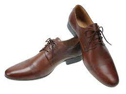
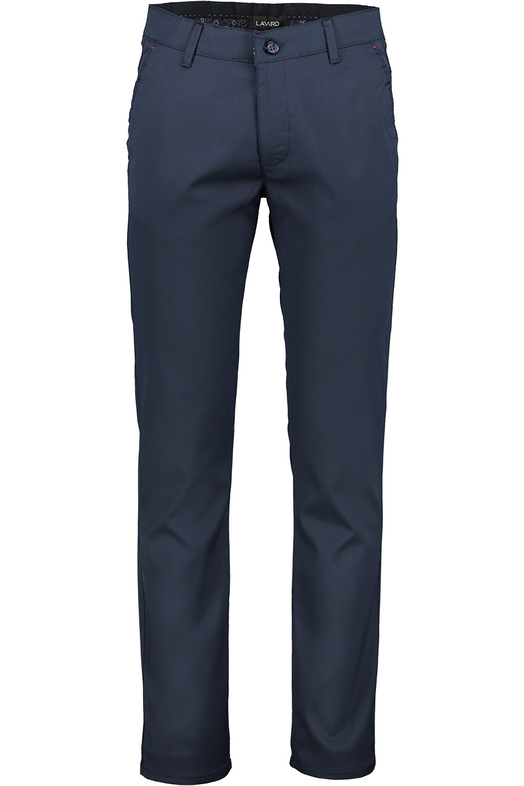
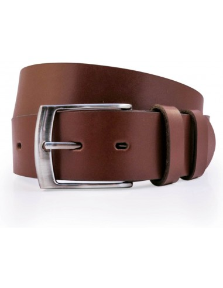
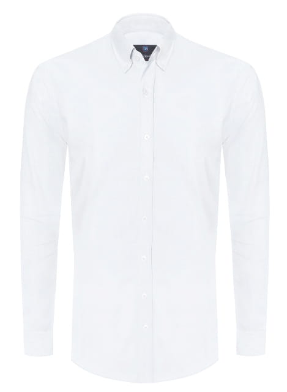
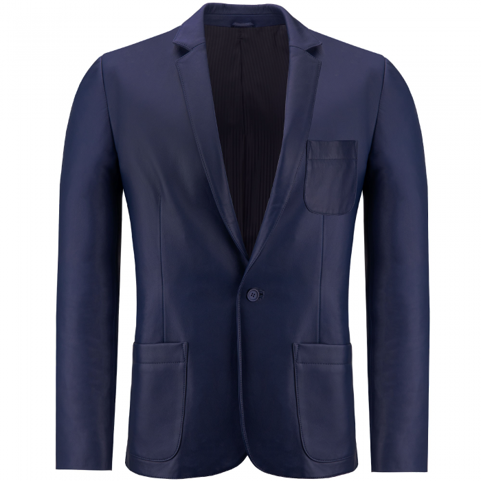
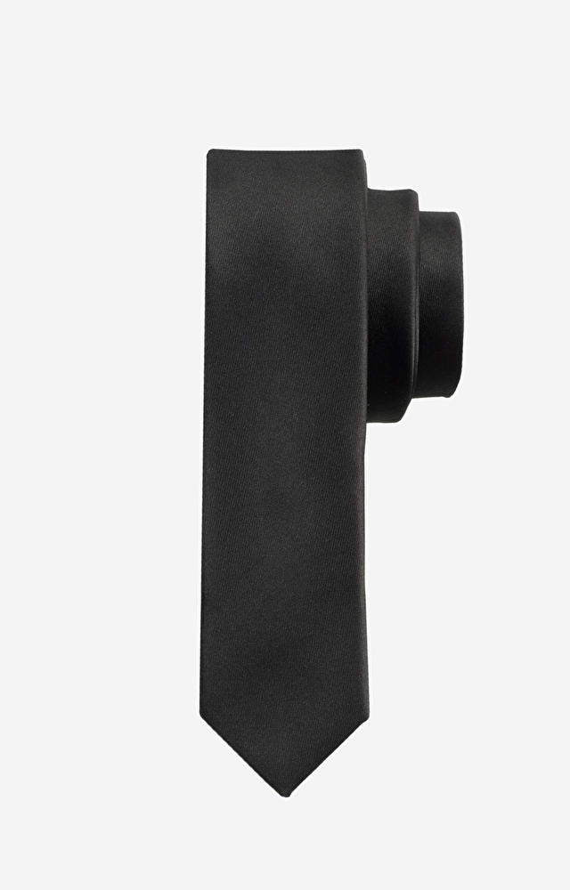
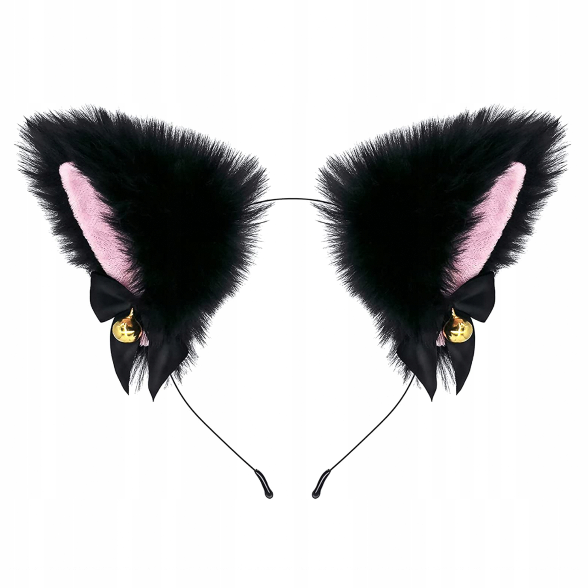

strój ucznioski to bardzo ważny element naszej szkoły, według mnie powinien wyglądać tak:
zaczynając od butów mój wybór padł na buty garniturowe w kolorze brązowym ponieważ według mojej subiektywnej opinii dużo lepiej pasuje do granatowego garnituru.

następnie spodnie, długie garniturowe granatowe. takie jak na niżej wstawionym obrazku:

pasek brązowy tak jak buty:

koszula biała abypodkreślić formalność ubioru:

marynarka granatowa:

krawat czarny:

wszystko zwięczone kocimi uszkami nawiązujacymi do japońskiej kultury:

dziękujęza uwagę